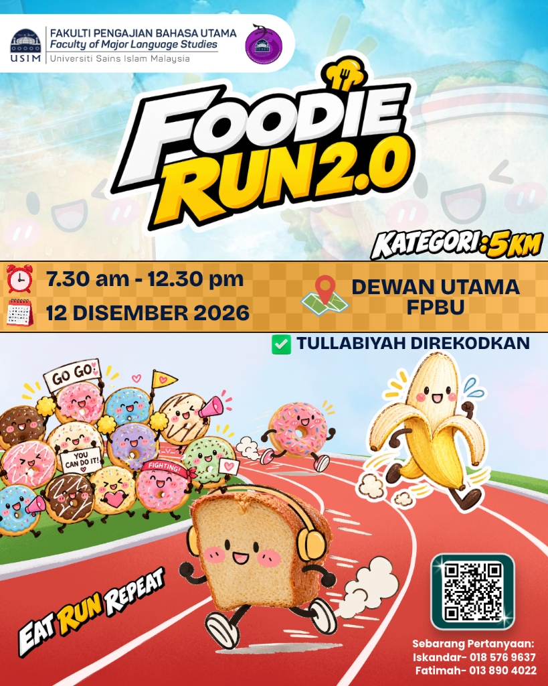
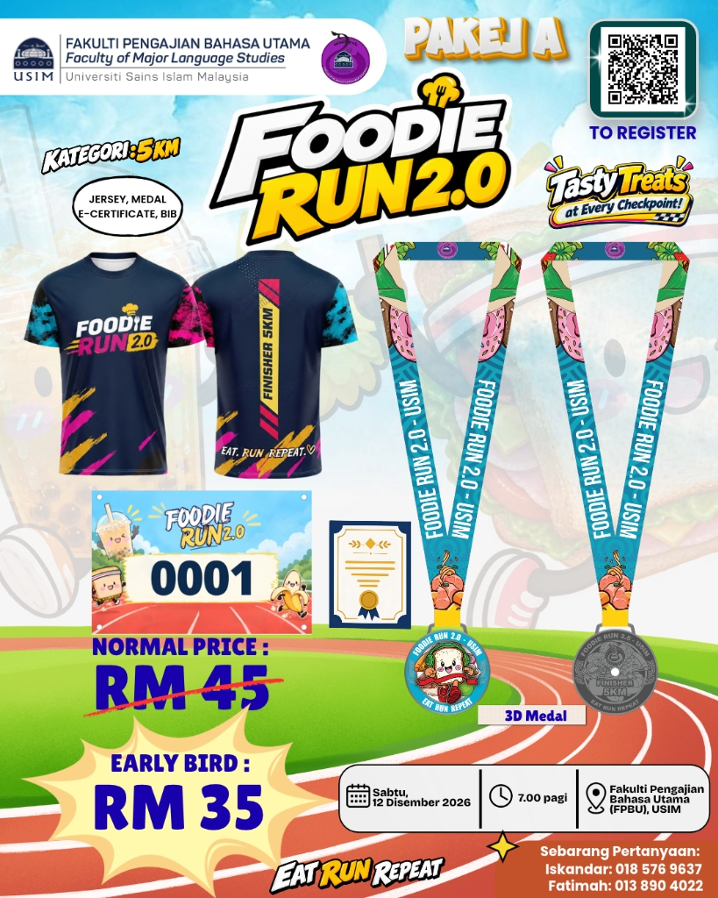
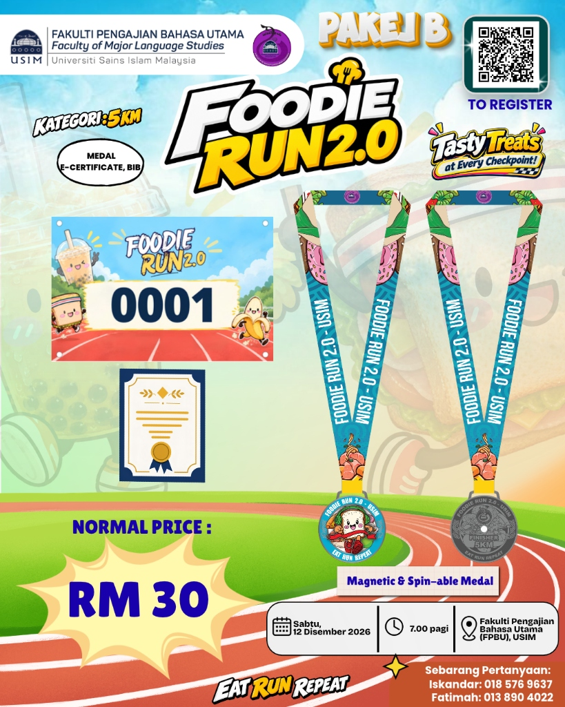
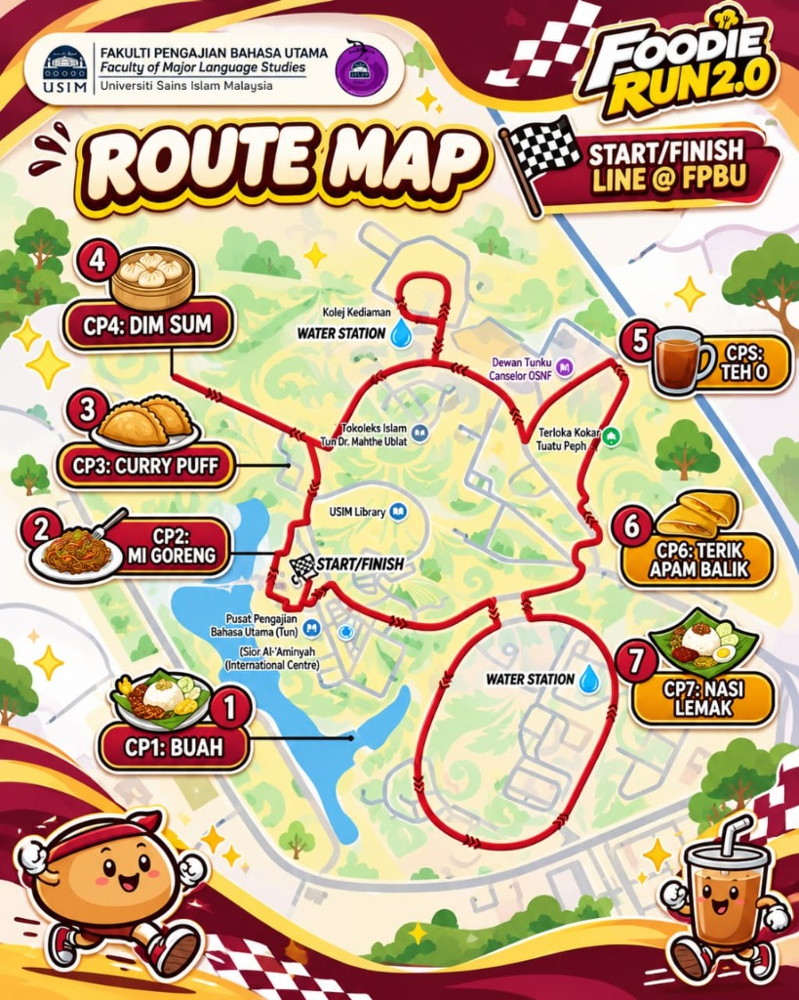
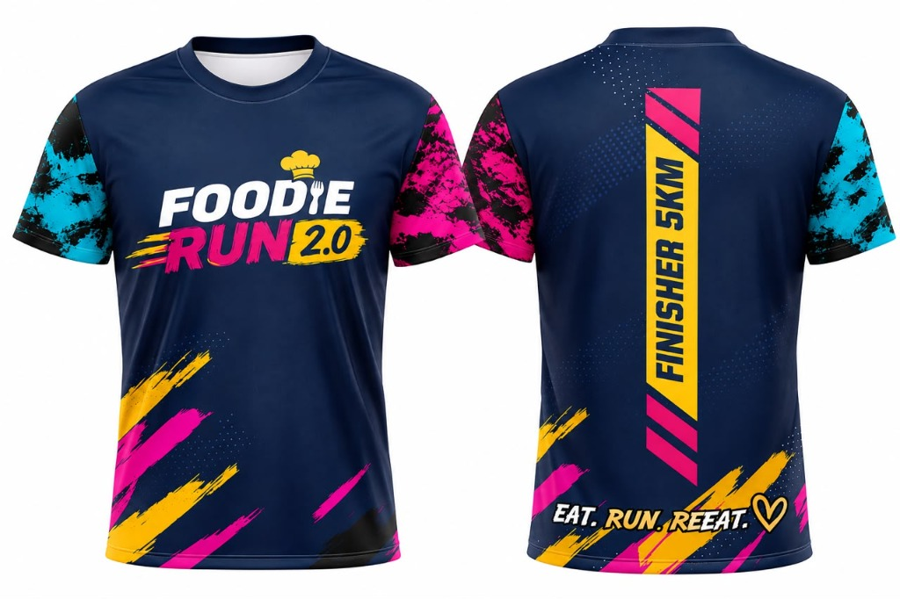
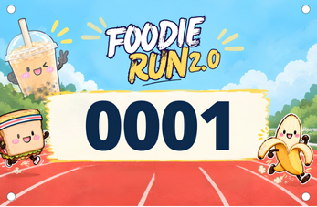
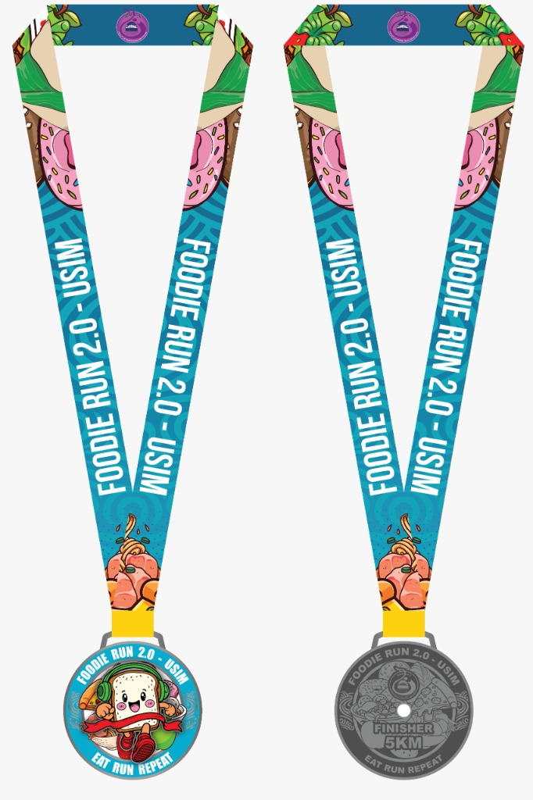
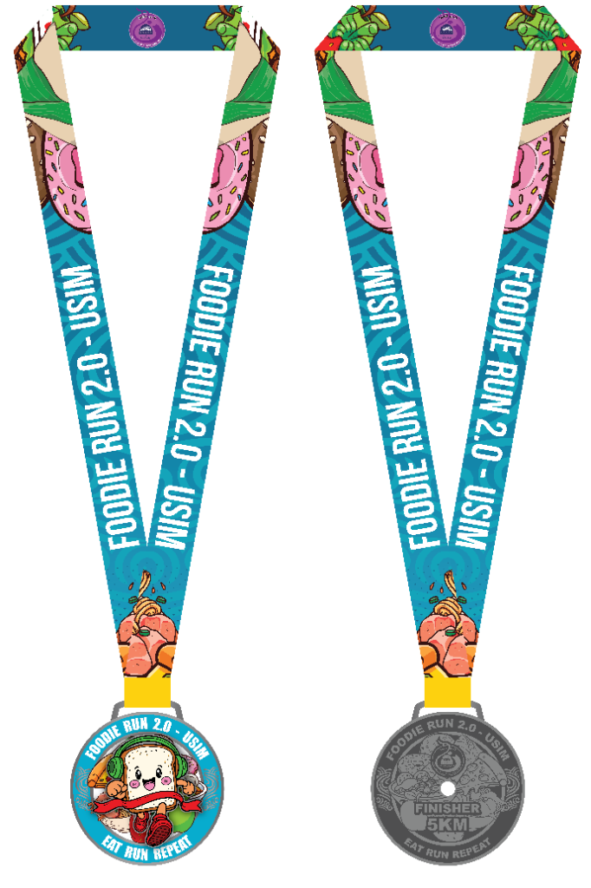

EAT · RUN · REPEAT
Gabungan larian santai 5KM, pesta makanan tempatan dan gaya hidup sihat untuk warga USIM & orang ramai!

Dianjurkan oleh Fakulti Pengajian Bahasa Utama (FPBU), USIM. Terbuka kepada semua — pelajar, staf USIM, keluarga, mahupun peminat larian dari luar!
Ada 7 Checkpoint Makanan sepanjang laluan: Buah, Mi Goreng, Curry Puff, Dim Sum, Teh O, Terik Apam Balik, dan Nasi Lemak, serta 2 Water Station!
Kelebihan istimewa untuk mahasiswa USIM! Penyertaan program ini akan direkodkan di dalam merit kokurikulum (Tullabiyah). Sihat dapat, makan sedap, merit pun dapat!
Pingat Finisher diperbuat daripada bahan logam berkualiti tinggi (metal) dengan ukiran timbul 3D dan enamel berwarna-warni yang tahan lasak dan eksklusif.
Pilih pakej yang sesuai untuk anda: Pakej Lengkap dengan Jersey atau Pakej Ekonomi tanpa Jersey!
Jersey + Medal + E-Certificate + Bib
Pakej penuh all-in-one! Dapatkan Jersey eksklusif KZ Apparel berserta pingat logam 3D, bib, e-sijil dan santapan makanan di semua checkpoint.
Medal + E-Certificate + Bib (Tanpa Jersey)
Pilihan bajet mesra poket! Nikmati larian santai, kutip pingat logam 3D, nikmati hidangan 7 checkpoint dan rekodkan jam Tullabiyah tanpa baju jersey.


Laluan scenic sekitar kampus FPBU USIM dengan 7 Checkpoint Makanan dan 2 Stesen Air Minuman!

💡 Klik peta untuk paparan penuh atau rujuk perincian 7 checkpoint di sebelah kanan.
Tempat perhimpunan, senamrobik pemanasan badan, flag-off & garisan penamat rasmi.
Buah-buahan segar berkhasiat berdekatan tasik & perpustakaan USIM untuk tenaga permulaan.
Mi goreng panas dan lazat untuk mengisi perut runner bertenaga!
Karipap panas rangup berinti kentang & rempah kari harum.
Dim sum kukus panas berhampiran Kompleks Islam Tun Dr. Mahathir.
Stesen penghidratan air mineral sejuk untuk menyegarkan larian anda.
Secawan Teh O panas menyegarkan berdekatan Dewan Tunku Canselor (DTC).
Apam balik gebu manis dengan taburan kacang & jagung rangup.
Stesen hidrasi kedua sebelum pecutan akhir ke garisan penamat.
Hidangan kemuncak Nasi Lemak wangi berlauk sambal dan telur rebus sebelum tamat!
Dihasilkan dengan fabrik berkualiti tinggi KZ Apparel dari saiz XS sehingga 9XL!

Baju larian mikrogentian premium berona biru gelap (navy) dengan corak percikan seni neon merah jambu, biru sian dan kuning. Bahagian belakang memaparkan teks garang "FINISHER 5KM" dan slogan "EAT. RUN. REPEAT. ♡".

Nombor bib larian rasmi berlatarbelakangkan trek larian ceria di bawah langit biru. Menampilkan watak maskot cawan Boba Tea yang comel, Roti Bakar dan Pisang yang sedang bersemangat berlari!
Setiap penamat larian (Pakej A & B) akan menerima Pingat Finisher yang diperbuat daripada logam padu (solid metal) dengan ukiran timbul 3D yang sangat eksklusif!


💡 Klik butang di atas atau klik pada gambar pingat untuk membalikkan antara bahagian hadapan dan belakang logam.
Menggambarkan maskot roti ceria dengan latar belakang biru toska serta makanan ikonik tempatan. Dicetak di atas plat logam padu berkilat berserta lanyard khas.
✨ Bahan Logam Padu (Solid Metal)Permukaan logam perak bertekstur dengan ukiran timbul 3D "FINISHER 5KM", logo USIM dan slogan keramat "EAT RUN REPEAT".
🛡️ Ukiran Timbul 3D Tahan KaratSabtu, 12 Disember 2026 · Dewan Utama FPBU, USIM Nilai
Kaunter dibuka di Dewan Utama FPBU untuk pengesahan kehadiran, pendaftaran saat akhir dan pengambilan bib.
Sesi senamrobik cergas bersama jurulatih kecergasan dan maskot Foodie Run bagi membakar semangat!
Pelepasan rasmi peserta oleh Dekan FPBU! Mulakan larian santai dan nikmati 7 checkpoint makanan sepanjang laluan.
Semua pelari melintasi garisan penamat, menerima Pingat Finisher Logam 3D & hidangan penamat istimewa.
Aktiviti santai, reruai makanan tempatan, sesi bergambar di photo booth dan cabutan bertuah menarik!
Terima kasih kepada semua peserta dan sukarelawan! EAT · RUN · REPEAT sehingga tahun depan! 🎉
Daftarkan diri anda sekarang untuk FOODIE RUN 2.0! Pendaftaran dibuka sehingga 30 November 2026 sahaja.
✅ Tullabiyah Direkodkan automatik untuk seluruh pelajar USIM yang berdaftar.
Jawapan ringkas untuk persoalan yang sering ditanya mengenai larian ini.
Pakej A (Early Bird RM35 / Biasa RM45) merangkumi Jersey rasmi Dry-Fit KZ Apparel (Lengan pendek dari XS hingga 9XL), Pingat Logam 3D, Race Bib, E-Sijil dan makanan di 7 checkpoint.
Pakej B (RM30) adalah pakej ekonomi yang merangkumi semua item di atas kecuali baju jersey.
Acara ini akan diadakan pada Sabtu, 12 Disember 2026 bermula jam 7:00 pagi hingga 12:30 tengah hari bertempat di Dewan Utama FPBU, USIM di Nilai, Negeri Sembilan.
Terdapat 7 Checkpoint Makanan & 2 Stesen Air:
1. Buah-buahan segar
2. Mi Goreng panas
3. Curry Puff (Karipap)
4. Dim Sum kukus
5. Teh O panas
6. Terik Apam Balik
7. Nasi Lemak daun pisang
Pingat finisher dibuat daripada logam padu (solid metal) dengan ukiran timbul 3D tahan karat dan kemasan warna enamel hadapan serta ukiran perak di bahagian belakang.
Ya! Penyertaan adalah diiktiraf dan Tullabiyah akan direkodkan untuk semua mahasiswa USIM yang hadir dan menamatkan larian bagi kedua-dua Pakej A dan Pakej B.
Pendaftaran akan ditutup pada 30 November 2026, jam 11:59 malam. Namun kuota Pakej A (Early Bird RM35) adalah terhad, jadi daftar awal!